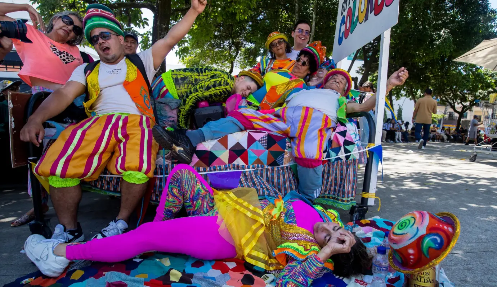
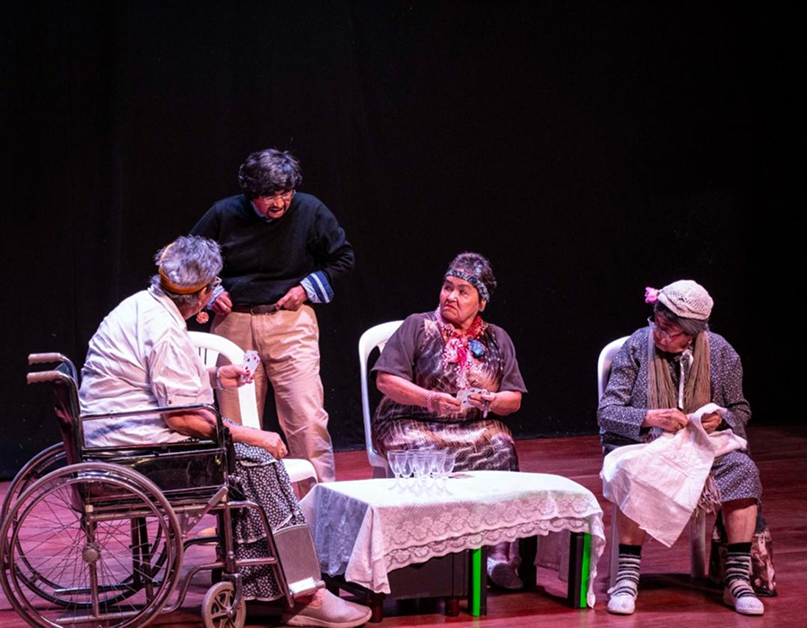
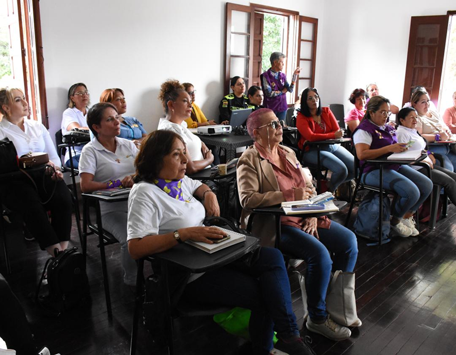

Ferias
Fiestas de la Industria, el comercio y la cultura.
La feria más grande de Itagüí. Dura una semana e incluye más de 200 actividades como conciertos, desfiles, teatro, exposiciones, gastronomía y eventos deportivos. Cierra con el famoso Día Mundial de la Pereza. Su objetivo es resaltar la identidad cultural, la actividad empresarial y la participación ciudadana.
Segunda semana de Agosto, generalmente del 9 al 17
Ver comentariosCierre de las fiestas de la industria y el comercio
Ver comentariosFestival de la Pereza
El Festival de la Pereza de Itagüí, también conocido como Día Mundial de la Pereza, es una celebración cultural anual que culmina las Fiestas de la Industria, el Comercio y la Cultura de la ciudad.La celebración incluye actividades como desfiles de camas y pijamas, presentaciones artísticas, ferias y conciertos, todo en un ambiente de alegría y fraternidad.
Festival de Talentos Artisticos
El Festival de Talentos Artísticos de Itagüí es un evento que fomenta y celebra las expresiones artísticas locales, organizado por la Alcaldía y el Instituto de Cultura, Recreación y Deporte. Su definición es la de una plataforma para que residentes de todas las edades, tanto niños como jóvenes, demuestren su talento en diversas áreas como canto, danza, teatro, poesía, cuento y artes plásticas, promoviendo la creatividad, la inclusión y la sana competencia
Del 18 al 21 de Noviembre
Ver comentariosEntre Junio y Abril
Ver comentariosIntercolegiados de Artes
Evento cultural para estudiantes de colegios públicos y privados. Se compite en áreas como música, canto, poesía, baile, pintura y teatro. Promueve el talento juvenil y la creatividad artística en las escuelas.
MujeresFest
Feria enfocada en el empoderamiento femenino. Hay muestras de emprendimiento, asesoría en salud, empleo, cultura y equidad de género. Visibiliza el rol de la mujer en el desarrollo social y económico del municipio.
13 de Agosto
Ver comentariosFiesta de la Cultura y el Comercio
Segunda semana de Agosto del 9 al 17
4.5
Escribir un comentario Juan Pérez
Juan Pérez
Las fiestas de Itagüí eran buenas cuando tenían en cuenta a los barrios y ponían tarimas en ella con buenos artistas.. ya estoy se volvió aburrido
 María Gómez
María Gómez
Ecxelente programación y más los artistas buena esa alcaldía , además es verdad en el estadio cabe mucha más gente y comodidad 👌
Definitivamente dañaron la cultura de Itagui con esas fiestas en el estadio y el cubo.
Festival de la Pereza
Cierre de las fiestas de la industria y el comercio
4.0
Escribir un comentario
Juan Pérez
Dejen la amargura,,q el domingo de la pereza es un parche muy bueno en el parque..muy recomendado 👌
María Gómez
No soy de se Itagüí pero dicen ser muy buenas
Pensando en fiestas con tanta Hp Inseguridad 🤮
Juan Pérez
Mi sobrino participó por primera vez en la muestra de artes plásticas. Como experiencia familiar es muy emocionante. Ver su trabajo expuesto y reconocido es invaluable. Sin embargo, en la inauguración, la logística del montaje estuvo un poco desorganizada; tuvimos que esperar bastante para que le asignaran bien el espacio.
María Gómez
Mi primera vez bailando en el Teatro Caribe gracias al festival. Estaba muerta del susto pero la energía del público fue increíble. ¡Gracias por la oportunidad! 💃💖
Muy bacano el evento y el talento de la gente, pero por favor, la próxima vez con la hora. Empiezan media hora tarde siempre. ¡A mejorar la puntualidad!
Juan Pérez
Felicitaciones a todos los participantes, excelente evento para fomentar el arte y la cultura en nuestro municipio!
María Gómez
Orgullo total de ver a nuestros jóvenes artistas brillar en el escenario. Gracias al Instituto por estos espacios.
Eventos como estos demuestran el esfuerzo, la disciplina y la pasión de miles de jóvenes que representan el presente y futuro del arte en Colombia.
Juan Pérez
En estas fiestas, las mujeres merecían un lugar exclusivo para ellas… y se hizo realidad. Me llena el corazón saber que están disfrutando de este grandioso evento, pensado especialmente para cada mujer de Itagüí.
María Gómez
¡Arriba el poder femenino! ✨💖 Ha sido un día para celebrar el talento, la fuerza y la inspiración de nuestras mujeres itagüiseñas. Qué alegría verlas empoderadas y felices.
Alcaldía de Itagüí solo mujeres